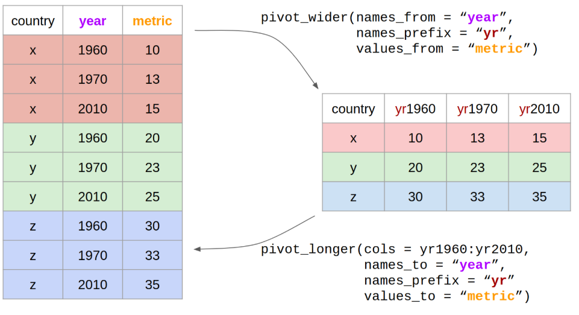
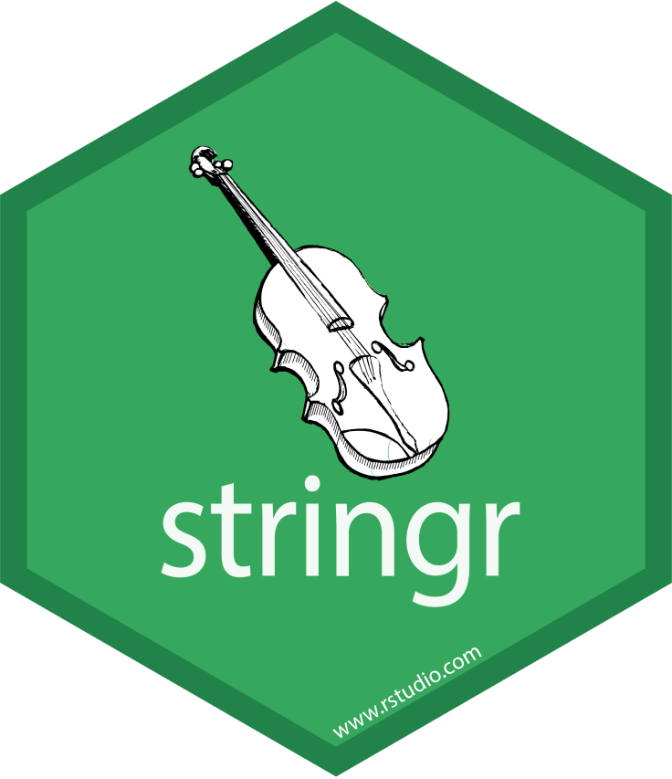
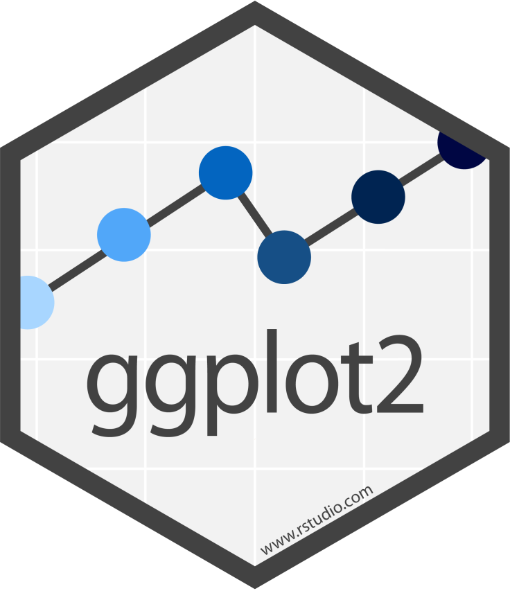
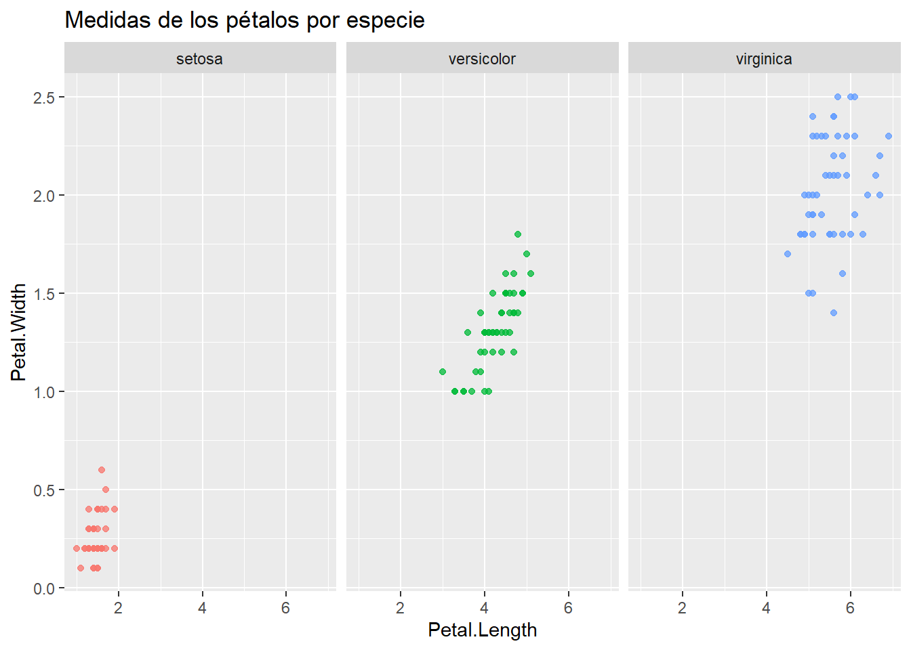
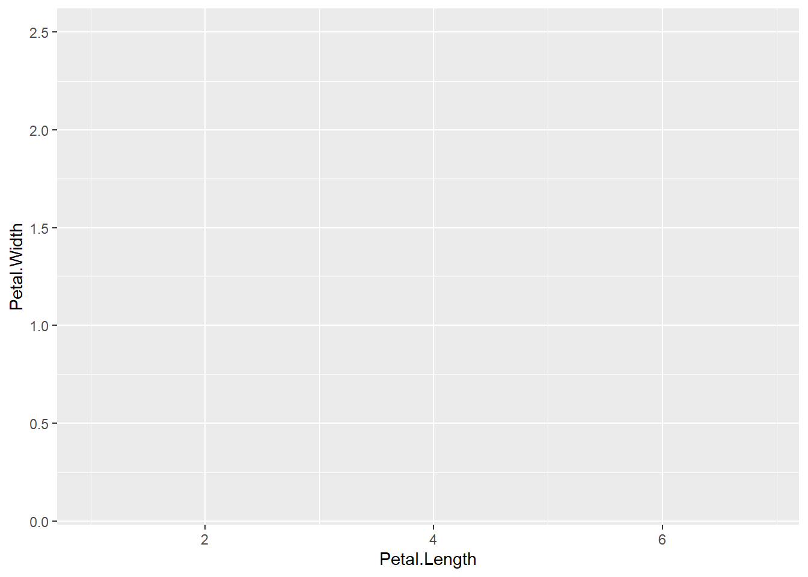
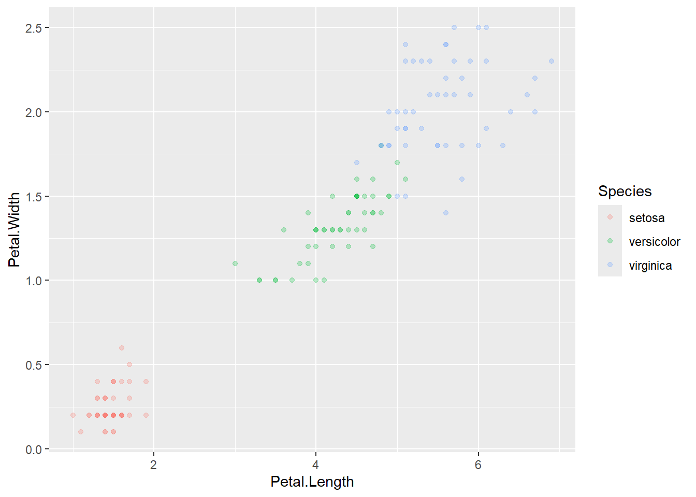

El caracter principal para utilizar este paquete es %>% o |>, pipe (de tubería).
Los %>% toman el set de datos a su izquierda, y los transforman mediante los comandos a su derecha, en los cuales los elementos de la izquierda están implícitos. En otros términos.
\(f(x,y)\) es equivalente a \(x\) %>% \(f(.,y)\)
Veamos las principales funciones que pueden utilizarse con la lógica de este paquete:
Glimpse
Permite ver la estructura de la tabla. Nos muestra:
Permite filtrar la tabla acorde al cumplimiento de condiciones lógicas
Código
Datos %>%filter(INDICE >400 , GRUPO =="Privado_Registrado")
INDICE FECHA GRUPO
1 408.4 May-21 Privado_Registrado
2 415.6 Jun-21 Privado_Registrado
Nótese que en este caso al separar con una (coma) , las condiciones se exige el cumplimiento de ambas. En caso de desear que se cumpla una sola condición debe utilizarse el caracter | (una condición “o” la otra).
Código
Datos %>%filter(INDICE >400| GRUPO =="Privado_Registrado")
INDICE FECHA GRUPO
1 394.5 Abr-21 Privado_Registrado
2 408.4 May-21 Privado_Registrado
3 415.6 Jun-21 Privado_Registrado
rename
Permite renombrar una columna de la tabla. Funciona de la siguiente manera: Data %>% rename( nuevo_nombre = viejo_nombre )
Nótese que a diferencia del ejemplo de la función filter donde utilizábamos == para comprobar una condición lógica, en este caso se utiliza sólo un = ya que lo estamos haciendo es asignar un nombre.
mutate
Permite agregar una nueva variable a la tabla (especificando el nombre que tomará esta), que puede ser el resultado de operaciones sobre otras variables de la misma tabla.
Ojo! En caso de especificar el nombre de una columna existente, el resultado de la operación realizada “sobrescribirá” la información de la columna con dicho nombre.
Permite definir una variable, la cual toma un valor particular para cada condición establecida. Los valores asignados deben ser siempre del mismo tipo (numérico, caracter, lógico, etc.).
En caso de no cumplir ninguna de las condiciones establecidas la variable tomara valor NA
La sintaxis de la función es case_when(condicion lógica1 ~ valor asignado1, condicion lógica2 ~ valor asignado2).
Código
Datos <- Datos %>%mutate(Caso_cuando =case_when(GRUPO =="Privado_Registrado"~ INDICE *2, GRUPO =="Público"~ INDICE *3))Datos
Una forma de manejar la asignación de valores faltantes es crear una “condición” que sea igual a TRUE. Esto funciona como la parte de else de una estructura condicional y la sintaxis es case_when(condicion lógica1 ~ valor asignado1, TRUE ~ valor asignado en caso de no cumplirse la/s condicion/es previas).
Código
Datos %>%mutate(Caso_cuando =case_when(GRUPO =="Privado_Registrado"~ INDICE *2, GRUPO =="Público"~ INDICE *3,TRUE~1000))
Como la función case_when va recorriendo las condiciones en forma secuencial, si repetimos una condición asingando un nuevo valor, el valor que prevalece será el de la primera. Veamos cómo sería el caso:
Código
Datos %>%mutate(Caso_cuando =case_when(GRUPO =="Privado_Registrado"~ INDICE, GRUPO =="Público"~ INDICE *3,# repetimos la condición 1 pero asignando otro valor GRUPO =="Privado_Registrado"~ INDICE *2,TRUE~1000))
Permite especificar la serie de columnas que se desea conservar de un DataFrame. También pueden especificarse las columnas que se desean descartar (agregándoles un -). Muy útil para agilizar el trabajo en bases de datos de gran tamaño.
Así como con la función filter() se filtran filas de interés, en este caso, la función select() permite seleccionar columnas de interés, reduciendo la dimensionalidad de la base con la cual trabajar.
Código
Datos2 <- Datos %>%select(INDICE, FECHA, GRUPO)Datos2
# o lo que es igualDatos <- Datos %>%select(-c(Doble, Caso_cuando))
arrange
Permite ordenar la tabla por los valores de determinada/s variable/s. Es útil cuando luego deben hacerse otras operaciones que requieran del ordenamiento de la tabla.
Por default ordena en forma ascendente, si queremos que alguna variable quede ordenada en forma descendente hay que usar desc().
Crea una nueva tabla que resuma la información original. Para ello, definimos las variables de resumen y las formas de agregación.
Código
# por ejemplo calculamos la media del INDICEDatos %>%summarise(Indprom =mean(INDICE))
Indprom
1 372.7333
group_by
Esta función permite realizar operaciones de forma agrupada. Lo que hace la función es “separar” a la tabla según los valores de la variable indicada y realizar las operaciones que se especifican a continuación, de manera independiente para cada una de las “subtablas”.
En nuestro ejemplo, sería útil para calcular el promedio de los indices por Fecha.
Código
Datos %>%group_by(FECHA) %>%summarise(Indprom =mean(INDICE))
# A tibble: 3 × 2
FECHA Indprom
<chr> <dbl>
1 Abr-21 364.
2 Jun-21 381.
3 May-21 373.
Joins
Otra implementación muy importante del paquete dplyr son las funciones para unir tablas (joins)
Veamos un ejemplo de la función left_join (una de las más utilizadas en la práctica). Para ello, es necesario tener dos tablas y una columna que será la que servirá para unir ambas.
Para ello crearemos previamente un Dataframe que contenga un Ponderador para cada uno de los Grupos del Dataframe Datos. Aprovecharemos el ejemplo para introducir la función weigthed.mean, y así calcular un Indice Ponderado.
Código
# creamos un dataframe de ponderadores con la columna GRUPO igual al dataset originalPonderadores <-data.frame(GRUPO =c("Privado_Registrado", "Público", "Privado_No_Registrado"), PONDERADOR =c(50.16,29.91,19.93))Ponderadores
# hacemos el join con el dataframe Datos Datos_join <- Datos %>%# especificamos la variable que será utilizada para unir ambas tablas con "by"left_join(., Ponderadores, by =join_by("GRUPO"=="GRUPO"))Datos_join
# agrupamos para calcular el indice ponderadoDatos_Indice_Gral <- Datos_join %>%group_by(FECHA) %>%summarise(Indice_Gral =weighted.mean(INDICE, w = PONDERADOR))Datos_Indice_Gral
# A tibble: 3 × 2
FECHA Indice_Gral
<chr> <dbl>
1 Abr-21 372.
2 Jun-21 391.
3 May-21 382.
Para más detalle sobre joins, ver notebook opcional de distintos tipos de joins.
Tidyr
El paquete tidyr esta pensado para “emprolijar los datos”. Tiene un conjunto de funciones para implementar las nociones de Tidy Data desarrolladas por Hadley Wickham en su paper.
En el enfoque de tidy data:
Cada variable conforma una columna
Cada observación conforma una fila
Cada tipo de unidad observacional conforma una tabla
Veremos dos funciones muy útiles para trabajar con este enfoque:
pivot_longer (previamente gather): es una función que nos permite pasar los datos de forma horizontal a una forma vertical.
pivot_wider (previamente spread): es una función que nos permite pasar los datos de forma vertical a una forma horizontal.
La funcionalidad es similar entre estas dos versiones, aunque pivot_longer y pivot_wider corresponden a un enfoque actualizado de las otras funciones, diseñado para ser más simple de usar y para manejar más casos de uso. Cabe destacar, que gather y spread ya no cuentan con mantenimiento y los autores de la librería recomiendan enfáticamente el uso de las nuevas versiones.

En la siguiente tabla (iris) cada observación es una planta con la medición del largo y ancho de su sépalo y pétalo y el tipo de especie a la cual pertenece.
Código
# Utilizamos un conjunto de datos que viene con la librería datasetslibrary(datasets)data(iris)iris <- iris %>%mutate(id =1:nrow(.)) %>%# se agrega un IDselect(id, everything()) # se acomoda para que el id este primero.
Pivot_longer (ex gather)
Ahora se considera que cada observación es la medición de cada uno de los 4 atributos de la planta para cada una de las plantas, entonces deberíamos “pivotear” la tabla para tener el tipo de medición como una variable.
Código
iris_vertical <- iris %>%pivot_longer(# Columnas a pivotear al formato "largo"cols =c(Sepal.Length, Sepal.Width, Petal.Length,Petal.Width), # nombre de la nueva columna sobre la que se pivotea el dataframenames_to ="tipo_medicion", # nombre de la nueva columna de valoresvalues_to ="valor" )iris_vertical
Podemos deshacer el pivot_longer con un pivot_wider
Código
iris_horizontal <- iris_vertical %>%pivot_wider(# nombre de la variable a expandirnames_from = tipo_medicion, # nombre de la columna con valoresvalues_from = valor) iris_horizontal
El paquete lubridate está pensado para trabajar con los datos tipo fecha(date) o fecha-hora(datetime) para cambiarles el formato, realizar operaciones y extraer información.
Cambio de formato
Existe una gran cantidad de funciones para realizar esto. La idea general es poder llevar los objetos datetime a un formato común compuesto de los elementos: año, mes, día, hora, minuto y segundo (también se puede setear el huso horario).
Código
fecha <-"04/12/92 17:35:16"fecha
[1] "04/12/92 17:35:16"
Código
class(fecha)
[1] "character"
Con la función dmy_hms() podemos convertir este string a una fecha: estamos indicando que el formato de la fecha es día(d), mes(m), año(y), hora(h), minuto(m) y segundo(s).
Código
fecha <-dmy_hms(fecha)fecha
[1] "1992-12-04 17:35:16 UTC"
Código
class(fecha)
[1] "POSIXct" "POSIXt"
Muchas funciones de lubridate operan con esta misma lógica.
Otra función para realizar un cambio de formato es parse_date_time. Permite construir objetos datetime a partir de datos más complejos, como por ejemplo cuando aparece el nombre del mes y el año.
En el parámetro x pasamos el dato de la fecha y en el parámetro orders especificamos el orden en el cual se encuentra la información de la fecha, por ejemplo, mes y año (my).
Existen muchas funciones muy sencillas para extraer información de un objeto datetime. Algunas son:
Código
year(fecha) # Obtener el año
[1] 1992
Código
month(fecha) # Obtener el mes
[1] 12
Código
day(fecha) # Obtener el día
[1] 4
Código
wday(fecha, label =TRUE) # Obtener el nombre del día
[1] Fri
Levels: Sun < Mon < Tue < Wed < Thu < Fri < Sat
Código
hour(fecha) # Obtener la hora
[1] 17
Operaciones
Podemos sumar o restarle cualquier período de tiempo a un objeto datetime.
Código
# Sumo dos días fecha +days(2)
[1] "1992-12-06 17:35:16 UTC"
Código
# Resto 1 semana y dos horasfecha - (weeks(1) +hours(2))
[1] "1992-11-27 15:35:16 UTC"
Stringr

Basado en la clase de Milena Dotta y Juan Barriola
Vamos a usar un paquete muy útil para manejar variables de tipo string, es decir, variables de texto, llamado stringr(). Este paquete cuenta con una cheat sheet que pueden consultar siguiendo este link.
str_length
Con la función str_length() podemos ver el largo de un string.
Código
string1 <-"abcdefghi"str_length(string1)
[1] 9
Cuidado que cuenta los espacios en blanco como un caracter!
Código
string2 <-"abcd efghi"str_length(string2)
[1] 10
La función str_sub() nos permite extraer los caracteres que se encuentran entre determinadas posiciones. Tiene tres argumentos: el string, el orden del caracter a partir del cual tiene que empezar a extraer y el orden del caracter hasta el cual tiene que extraer.
Código
#quiero el tercer caracterstr_sub(string1,3,3)
[1] "c"
Código
#quiero el cuarto y quinto caracterstr_sub(string1,4,5)
[1] "de"
Puedo pasarle la posición de los caracteres con un menos para indicar que quiero que cuente de atrás para adelante. Por ejemplo, si quiero que traiga el anteúltimo caracter llamo a la posición como -2.
Código
#quiero la última y anteúltima posiciónstr_sub(string1,-2,-1)
[1] "hi"
Otro uso que le podemos dar a este comando es el de reemplazar elementos. Supongamos que quiero reemplazar la última letra por una z.
Código
str_sub(string1,-1,-1) <-"z"string1
[1] "abcdefghz"
Manejo de espacios en blanco
Es frecuente que aparezcan datos mal cargados o con errores de tipeo que tienen espacios donde no debería haberlos. La función str_trim() permite que nos deshagamos de los espacios en blanco a izquierda, derecha o ambos lados de nuestro string.
Código
string3 <-c(" acelga ", "brocoli ", " choclo")#Veamos el stringstring3
[1] " acelga " "brocoli " " choclo"
Quitamos los espacios en blanco a ambos lados con el argumento side=‘both’
Código
str_trim(string3, side ='both')
[1] "acelga" "brocoli" "choclo"
Quitamos los espacios en blanco del lado izquierdo con el argumento side=‘left’
Código
str_trim(string3, "left")
[1] "acelga " "brocoli " "choclo"
Mayúsculas y minúsculas
Existen varias funciones para manipular las mayusculas/minúsculas de nuestros strings. A modo de sugerencia, siempre es convientiente manejarse con todos los caracteres en minúscula o en mayúscula. Esto ayuda a normalizar la información para armar mejor grupos, joinear tablas, etc.
Código
string4 <-"No me gusta el frio"string4
[1] "No me gusta el frio"
Código
#llevo todo a minúsculasstr_to_lower(string4)
[1] "no me gusta el frio"
Código
#llevo todo a mayúsculasstr_to_upper(string4)
[1] "NO ME GUSTA EL FRIO"
Código
#llevo a mayúscula la primer letra de cada palabrastr_to_title(string4)
[1] "No Me Gusta El Frio"
str_split
La función str_split() nos permite partir un string de acuerdo a algún separador/patron (pattern) que definamos.
Código
#quiero separar todas las letras de mi stringstring1_separado <-str_split(string1,pattern ="")string1_separado
[[1]]
[1] "a" "b" "c" "d" "e" "f" "g" "h" "z"
Notemos que esta funcion nos devuelve una lista
Código
class(string1_separado)
[1] "list"
Código
# Si queremos acceder al primer elemento de la listastring1_separado[[1]][1]
[1] "a"
Definimos un nuevo string
Código
string5 <-"ab-cd-ef"string5
[1] "ab-cd-ef"
Lo separamos por el guion
Código
str_split(string5, pattern ="-")
[[1]]
[1] "ab" "cd" "ef"
Reemplazar elementos de strings
La función base gsub() nos permite reemplazar parte del string por otra cosa. Las funciones str_replace() y str_replace_all() de stringr nos permiten hacer lo mismo.
str_replace solo reemplaza la primera ocurrencia del patron mientras que str_replace_all() reemplaza todas las ocurrencias
Código
string6 <-"todos los manzanos blancos"string6
[1] "todos los manzanos blancos"
Código
#le sacamos los espaciosgsub(pattern =" ", replacement ="", x = string6)
[1] "todoslosmanzanosblancos"
Código
#lo llevamos a genero femeninogsub(pattern ="os", replacement ="as", x = string6)
[1] "todas las manzanas blancas"
Con stringr
Código
# Reemplazamos la primera ocurrenciastr_replace(string = string6, pattern ="os", replacement ="as")
[1] "todas los manzanos blancos"
Código
# Reemplazamos todas las ocurrenciasstr_replace_all(string = string6, pattern ="os", replacement ="as")
[1] "todas las manzanas blancas"
Detectar patrones en strings
La función grepl() nos permite encontrar expresiones dentro de nuestros strings. Nos reporta VERDADERO o FALSO de acuerdo a si encuentra la expresión que estamos buscando.
La funcion str_detect() de stringr permite hacer lo mismo.
Código
string7 <-c("caño", "baño", "ladrillo")string7
[1] "caño" "baño" "ladrillo"
Código
grepl(pattern ="ñ",x = string7)
[1] TRUE TRUE FALSE
Código
str_detect(pattern ="ñ", string = string7)
[1] TRUE TRUE FALSE
Ggplot2

ggplot tiene su sintaxis propia. La idea central es pensar los gráficos como una sucesión de capas, que se construyen una a la vez.
El operador + nos permite incorporar nuevas capas al gráfico.
El comando ggplot() nos permite definir los datos y las variables (x, y, color, forma, etc.).
Las sucesivas capas nos permiten definir:
Uno o más tipos de gráficos (de columnas, geom_col(), de línea, geom_line(), de puntos,geom_point(), boxplot, geom_boxplot())
Títulos labs()
Estilo del gráfico theme()
Escalas de los ejes scale_y_continuous,scale_x_discrete
División en subconjuntos facet_wrap(),facet_grid()
ggplot tiene muchos comandos, y no tiene sentido saberlos de memoria, es siempre útil reutilizar gráficos viejos y tener a mano el machete.
También hay otros machetes útiles que ofrece RStudio. Pueden descargarlos en el siguiente link.
Código
# usando el dataset iris anteriorlibrary(ggplot2)library(ggthemes) # estilos de gráficos
Warning: package 'ggthemes' was built under R version 4.4.3
Código
library(ggrepel) # etiquetas de texto más prolijas que las de ggplot
Warning: package 'ggrepel' was built under R version 4.4.3
Código
library(scales) # tiene la función 'percent()'
Attaching package: 'scales'
The following object is masked from 'package:purrr':
discard
The following object is masked from 'package:readr':
col_factor
Código
ggplot(data = iris, aes(x = Petal.Length, Petal.Width, color = Species)) +geom_point(alpha =0.75) +# agregamos transparencia a los puntoslabs(title ="Medidas de los pétalos por especie") +theme(legend.position ='none') +facet_wrap(~ Species)

Capas del Gráfico
Veamos ahora, el “paso a paso” del armado del mismo.
En primera instancia solo defino los ejes. Y en este caso un color particular para cada Especie.
Código
g <-ggplot(data = iris, aes(x = Petal.Length, Petal.Width, color = Species))g

Luego, defino el tipo de gráfico. El alpha me permite definir la intensidad/transparencia de los puntos.
Código
g <- g +geom_point(alpha =0.25)g

Las siguientes tres capas me permiten respectivamente:
Definir el título del gráfico
Quitar la leyenda
Abrir el gráfico en tres fragmentos, uno para cada especie
Código
g <- g +labs(title ="Medidas de los pétalos por especie") +theme(legend.position ='none') +facet_wrap(~ Species)g
Esto permite tener en el plano gráficos de muchas dimensiones de análisis.
Cuando queremos utilizar estos parámetros para representar una variable, los definimos dentro del aes(), aes(... color = ingresos), cuando queremos simplemente mejorar el diseño, se asignan por fuera, o dentro de cada tipo de gráficos, geom_col(color = 'green').
Ejecutar el código
---title: "Intro a Tidyverse"subtitle: "Enfoque Estadístico del Aprendizaje 2026"author: "Basado en el material de Juan Barriola, Fernando González y Franco Mastelli"lang: esformat: html: theme: flatly code-fold: show code-tools: true toc: true toc-location: left---# Presentación Cualquier consulta sobre esta clase, GLM y Regresión Logística y Regularización, consultar al siguiente mail:pamepairo@gmail.com## Breve Repaso y hacia donde vamos 🚀{width=800}{width=800}# ¿Qué es [Tidyverse](https://www.tidyverse.org/)? {fig-align="center" width=100}Es un paquete “umbrella” que agrupa una serie de paquetes que tienen unamisma lógica.{fig-align="center"}A continuación cargamos la librería a nuestro ambiente. Para ello debe estar previamente instalada en nuestra pc o se instala con ```install.packages()```.```{r, warning=FALSE}library(tidyverse)```A lo largo de esta clase usaremos parte de un conjunto de datos real del [Indice de salarios del INDEC](https://www.indec.gob.ar/indec/web/Nivel4-Tema-4-31-61).``` {r, warning=FALSE}INDICE <- c( 394.5, 350.7, 346.3, 408.4, 360.8, 349.5, 415.6, 375.3, 353.5 )FECHA <- c("Abr-21", "Abr-21", "Abr-21", "May-21", "May-21", "May-21", "Jun-21", "Jun-21", "Jun-21")GRUPO <- c("Privado_Registrado","Público","Privado_No_Registrado", "Privado_Registrado","Público","Privado_No_Registrado", "Privado_Registrado","Público","Privado_No_Registrado")Datos <- data.frame(INDICE, FECHA, GRUPO)Datos```## Dplyr{fig-align="center" width=100}El caracter principal para utilizar este paquete es ```%>%``` o ```|>```, _pipe_ (de tubería).Los ```%>%``` toman el set de datos a su izquierda, y los transforman mediante los comandos a su derecha, en los cuales los elementos de la izquierda están implícitos. En otros términos.$f(x,y)$ es equivalente a $x$ %>% $f(.,y)$ Veamos las principales funciones que pueden utilizarse con la lógica de este paquete:### GlimpsePermite ver la estructura de la tabla. Nos muestra: * número de filas* número de columnas* nombre de las columnas* tipo de dato de cada columna* las primeras observaciones de la tabla```{r}glimpse(Datos)``````{r}Datos %>%glimpse()```### filterPermite filtrar la tabla acorde al cumplimiento de condiciones lógicas```{r}Datos %>%filter(INDICE >400 , GRUPO =="Privado_Registrado")```Nótese que en este caso al separar con una (coma) `,` las condiciones se exige el cumplimiento de ambas. En caso de desear que se cumpla una sola condición debe utilizarse el caracter `|` (una condición "o" la otra).```{r}Datos %>%filter(INDICE >400| GRUPO =="Privado_Registrado")```### renamePermite renombrar una columna de la tabla. Funciona de la siguiente manera: ```Data %>% rename( nuevo_nombre = viejo_nombre )``` ```{r}Datos %>%rename(Periodo = FECHA)```Nótese que a diferencia del ejemplo de la función __filter__ donde utilizábamos __==__ para comprobar una condición lógica, en este caso se utiliza sólo un __=__ ya que lo estamos haciendo es _asignar_ un nombre.### mutatePermite agregar una nueva variable a la tabla (especificando el nombre que tomará esta), que puede ser el resultado de operaciones sobre otras variables de la misma tabla. > Ojo! En caso de especificar el nombre de una columna existente, el resultado de la operación realizada "sobrescribirá" la información de la columna con dicho nombre. ```{r}Datos <- Datos %>%mutate(Doble = INDICE *2)Datos```### case_whenPermite definir una variable, la cual toma un valor particular para cada condición establecida. Los valores asignados deben ser siempre del mismo tipo (numérico, caracter, lógico, etc.).En caso de no cumplir ninguna de las condiciones establecidas la variable tomara valor __NA__La sintaxis de la función es ```case_when(condicion lógica1 ~ valor asignado1, condicion lógica2 ~ valor asignado2)```.```{r}Datos <- Datos %>%mutate(Caso_cuando =case_when(GRUPO =="Privado_Registrado"~ INDICE *2, GRUPO =="Público"~ INDICE *3))Datos```Una forma de manejar la asignación de valores faltantes es crear una "condición" que sea igual a TRUE. Esto funciona como la parte de **else** de una estructura condicional y la sintaxis es ```case_when(condicion lógica1 ~ valor asignado1, TRUE ~ valor asignado en caso de no cumplirse la/s condicion/es previas)```.```{r}Datos %>%mutate(Caso_cuando =case_when(GRUPO =="Privado_Registrado"~ INDICE *2, GRUPO =="Público"~ INDICE *3,TRUE~1000)) ```Como la función `case_when` va recorriendo las condiciones en forma secuencial, si repetimos una condición asingando un nuevo valor, el valor que prevalece será el de la primera. Veamos cómo sería el caso: ```{r}Datos %>%mutate(Caso_cuando =case_when(GRUPO =="Privado_Registrado"~ INDICE, GRUPO =="Público"~ INDICE *3,# repetimos la condición 1 pero asignando otro valor GRUPO =="Privado_Registrado"~ INDICE *2,TRUE~1000))```### selectPermite especificar la serie de columnas que se desea conservar de un DataFrame. También pueden especificarse las columnas que se desean descartar (agregándoles un _-_). Muy útil para agilizar el trabajo en bases de datos de gran tamaño.Así como con la función ```filter()``` se filtran filas de interés, en este caso, la función ```select()``` permite seleccionar columnas de interés, reduciendo la dimensionalidad de la base con la cual trabajar.```{r}Datos2 <- Datos %>%select(INDICE, FECHA, GRUPO)Datos2# o lo que es igualDatos <- Datos %>%select(-c(Doble, Caso_cuando))```### arrangePermite ordenar la tabla por los valores de determinada/s variable/s. Es útil cuando luego deben hacerse otras operaciones que requieran del ordenamiento de la tabla. Por default ordena en forma ascendente, si queremos que alguna variable quede ordenada en forma descendente hay que usar ```desc()```. ```{r}Datos <- Datos %>%arrange(GRUPO, INDICE)Datos``````{r}# o en forma descendenteDatos <- Datos %>%arrange(GRUPO, desc(INDICE))Datos```### summariseCrea una nueva tabla que resuma la información original. Para ello, definimos las variables de resumen y las formas de agregación.```{r}# por ejemplo calculamos la media del INDICEDatos %>%summarise(Indprom =mean(INDICE))```### group_byEsta función permite realizar operaciones de forma agrupada. Lo que hace la función es "separar" a la tabla según los valores de la variable indicada y realizar las operaciones que se especifican a continuación, de manera independiente para cada una de las "subtablas". En nuestro ejemplo, sería útil para calcular el promedio de los indices por _Fecha_. ```{r}Datos %>%group_by(FECHA) %>%summarise(Indprom =mean(INDICE))```## JoinsOtra implementación muy importante del paquete dplyr son las funciones para unir tablas (joins){width=500} ### left_joinVeamos un ejemplo de la función __left_join__ (una de las más utilizadas en la práctica). Para ello, es necesario tener dos tablas y una columna que será la que servirá para unir ambas. Para ello crearemos previamente un Dataframe que contenga un Ponderador para cada uno de los Grupos del Dataframe _Datos_. Aprovecharemos el ejemplo para introducir la función __weigthed.mean__, y así calcular un Indice Ponderado.```{r}# creamos un dataframe de ponderadores con la columna GRUPO igual al dataset originalPonderadores <-data.frame(GRUPO =c("Privado_Registrado", "Público", "Privado_No_Registrado"), PONDERADOR =c(50.16,29.91,19.93))Ponderadores``````{r}# hacemos el join con el dataframe Datos Datos_join <- Datos %>%# especificamos la variable que será utilizada para unir ambas tablas con "by"left_join(., Ponderadores, by =join_by("GRUPO"=="GRUPO"))Datos_join# agrupamos para calcular el indice ponderadoDatos_Indice_Gral <- Datos_join %>%group_by(FECHA) %>%summarise(Indice_Gral =weighted.mean(INDICE, w = PONDERADOR))Datos_Indice_Gral```Para más detalle sobre joins, ver notebook opcional de distintos tipos de [joins](https://eea-uba.github.io/EEA-2021/clase%202/Clase 2. Distintos tipos de Join (OPCIONAL).nb.html).## Tidyr{fig-align="center" width=100}El paquete tidyr esta pensado para "emprolijar los datos". Tiene un conjunto de funciones para implementar las nociones de Tidy Data desarrolladas por Hadley Wickham en su [paper](https://www.researchgate.net/publication/215990669_Tidy_data).En el enfoque de *tidy data*:1. Cada variable conforma una columna2. Cada observación conforma una fila3. Cada tipo de unidad observacional conforma una tabla Veremos dos funciones muy útiles para trabajar con este enfoque:__pivot_longer__ (previamente __gather__): es una función que nos permite pasar los datos de forma horizontal a una forma vertical. __pivot_wider__ (previamente __spread__): es una función que nos permite pasar los datos de forma vertical a una forma horizontal.La funcionalidad es similar entre estas dos versiones, aunque __pivot_longer__ y __pivot_wider__ corresponden a un enfoque actualizado de las otras funciones, diseñado para ser más simple de usar y para manejar más casos de uso. Cabe destacar, que __gather__ y __spread__ ya no cuentan con mantenimiento y los autores de la librería recomiendan enfáticamente el uso de las nuevas versiones.{fig-align="center" width=600}En la siguiente tabla (iris) cada observación es una planta con la medición del largo y ancho de su sépalo y pétalo y el tipo de especie a la cual pertenece.```{r}# Utilizamos un conjunto de datos que viene con la librería datasetslibrary(datasets)data(iris)iris <- iris %>%mutate(id =1:nrow(.)) %>%# se agrega un IDselect(id, everything()) # se acomoda para que el id este primero. ```### Pivot_longer (ex gather) Ahora se considera que cada observación es la medición de cada uno de los 4 atributos de la planta para cada una de las plantas, entonces deberíamos "pivotear" la tabla para tener el tipo de medición como una variable.```{r}iris_vertical <- iris %>%pivot_longer(# Columnas a pivotear al formato "largo"cols =c(Sepal.Length, Sepal.Width, Petal.Length,Petal.Width), # nombre de la nueva columna sobre la que se pivotea el dataframenames_to ="tipo_medicion", # nombre de la nueva columna de valoresvalues_to ="valor" )iris_vertical```### Pivot_wider (ex spread)Podemos deshacer el __pivot_longer__ con un __pivot_wider__```{r}iris_horizontal <- iris_vertical %>%pivot_wider(# nombre de la variable a expandirnames_from = tipo_medicion, # nombre de la columna con valoresvalues_from = valor) iris_horizontal```## [Lubridate](https://lubridate.tidyverse.org/){fig-align="center" width=100}El paquete lubridate está pensado para trabajar con los datos tipo fecha(date) o fecha-hora(datetime) para cambiarles el formato, realizar operaciones y extraer información.### Cambio de formatoExiste una gran cantidad de funciones para realizar esto. La idea general es poder llevar los objetos *datetime* a un formato común compuesto de los elementos: año, mes, día, hora, minuto y segundo (también se puede setear el huso horario).```{r}fecha <-"04/12/92 17:35:16"fechaclass(fecha)```Con la función ```dmy_hms()``` podemos convertir este string a una fecha: estamos indicando que el formato de la fecha es día(d), mes(m), año(y), hora(h), minuto(m) y segundo(s).```{r}fecha <-dmy_hms(fecha)fechaclass(fecha)```Muchas funciones de lubridate operan con esta misma lógica.Otra función para realizar un cambio de formato es *parse_date_time*. Permite construir objetos *datetime* a partir de datos más complejos, como por ejemplo cuando aparece el nombre del mes y el año.En el parámetro *x* pasamos el dato de la fecha y en el parámetro *orders* especificamos el orden en el cual se encuentra la información de la fecha, por ejemplo, mes y año (my).```{r}fecha2 <-"Dec-92"fecha2 <-parse_date_time(fecha2, orders ='my')fecha2```### Extracción de informaciónExisten muchas funciones muy sencillas para extraer información de un objeto datetime. Algunas son:```{r}year(fecha) # Obtener el añomonth(fecha) # Obtener el mesday(fecha) # Obtener el díawday(fecha, label =TRUE) # Obtener el nombre del díahour(fecha) # Obtener la hora```### OperacionesPodemos sumar o restarle cualquier período de tiempo a un objeto datetime.```{r}# Sumo dos días fecha +days(2)# Resto 1 semana y dos horasfecha - (weeks(1) +hours(2))```## Stringr{fig-align="center" width=100}Basado en la [clase](https://jmbarriola.github.io/ATR-2019/Clase%205/clase5_strings_y_fechas.nb.html) de Milena Dotta y Juan BarriolaVamos a usar un paquete muy útil para manejar variables de tipo string, es decir, variables de texto, llamado ```stringr()```. Este paquete cuenta con una cheat sheet que pueden consultar siguiendo este [link](http://edrub.in/CheatSheets/cheatSheetStringr.pdf).### str_lengthCon la función ```str_length()``` podemos ver el largo de un string.```{r}string1 <-"abcdefghi"str_length(string1)```> Cuidado que cuenta los espacios en blanco como un caracter!```{r}string2 <-"abcd efghi"str_length(string2)```La función ```str_sub()``` nos permite extraer los caracteres que se encuentran entre determinadas posiciones. Tiene tres argumentos: el **string**, el orden del caracter **a partir** del cual tiene que empezar a extraer y el orden del caracter **hasta** el cual tiene que extraer.```{r}#quiero el tercer caracterstr_sub(string1,3,3)#quiero el cuarto y quinto caracterstr_sub(string1,4,5)```Puedo pasarle la posición de los caracteres con un menos para indicar que quiero que cuente de atrás para adelante. Por ejemplo, si quiero que traiga el anteúltimo caracter llamo a la posición como -2.```{r}#quiero la última y anteúltima posiciónstr_sub(string1,-2,-1)```Otro uso que le podemos dar a este comando es el de reemplazar elementos. Supongamos que quiero reemplazar la última letra por una z.```{r}str_sub(string1,-1,-1) <-"z"string1```### Manejo de espacios en blancoEs frecuente que aparezcan datos mal cargados o con errores de tipeo que tienen espacios donde no debería haberlos. La función ```str_trim()``` permite que nos deshagamos de los espacios en blanco a izquierda, derecha o ambos lados de nuestro string.```{r}string3 <-c(" acelga ", "brocoli ", " choclo")#Veamos el stringstring3```Quitamos los espacios en blanco a ambos lados con el argumento ```side=‘both’``````{r}str_trim(string3, side ='both')```Quitamos los espacios en blanco del lado izquierdo con el argumento ```side=‘left’``````{r}str_trim(string3, "left")```### Mayúsculas y minúsculasExisten varias funciones para manipular las mayusculas/minúsculas de nuestros strings. A modo de sugerencia, siempre es convientiente manejarse con todos los caracteres en minúscula o en mayúscula. Esto ayuda a normalizar la información para armar mejor grupos, joinear tablas, etc.```{r}string4 <-"No me gusta el frio"string4#llevo todo a minúsculasstr_to_lower(string4)#llevo todo a mayúsculasstr_to_upper(string4)#llevo a mayúscula la primer letra de cada palabrastr_to_title(string4)```### str_splitLa función ```str_split()``` nos permite partir un string de acuerdo a algún separador/patron (pattern) que definamos.```{r}#quiero separar todas las letras de mi stringstring1_separado <-str_split(string1,pattern ="")string1_separado```Notemos que esta funcion nos devuelve una lista```{r}class(string1_separado)# Si queremos acceder al primer elemento de la listastring1_separado[[1]][1]```Definimos un nuevo string```{r}string5 <-"ab-cd-ef"string5```Lo separamos por el guion```{r}str_split(string5, pattern ="-")```### Reemplazar elementos de stringsLa función base `gsub()` nos permite reemplazar parte del string por otra cosa. Las funciones `str_replace()` y `str_replace_all()` de stringr nos permiten hacer lo mismo.`str_replace` solo reemplaza la primera ocurrencia del patron mientras que `str_replace_all()` reemplaza todas las ocurrencias```{r}string6 <-"todos los manzanos blancos"string6#le sacamos los espaciosgsub(pattern =" ", replacement ="", x = string6)#lo llevamos a genero femeninogsub(pattern ="os", replacement ="as", x = string6)```Con stringr```{r}# Reemplazamos la primera ocurrenciastr_replace(string = string6, pattern ="os", replacement ="as")# Reemplazamos todas las ocurrenciasstr_replace_all(string = string6, pattern ="os", replacement ="as")```### Detectar patrones en stringsLa función `grepl()` nos permite encontrar expresiones dentro de nuestros strings. Nos reporta VERDADERO o FALSO de acuerdo a si encuentra la expresión que estamos buscando.La funcion `str_detect()` de `stringr` permite hacer lo mismo.```{r}string7 <-c("caño", "baño", "ladrillo")string7grepl(pattern ="ñ",x = string7)str_detect(pattern ="ñ", string = string7)```## Ggplot2{fig-align="center" width=100}`ggplot` tiene su sintaxis propia. La idea central es pensar los gráficos como una sucesión de capas, que se construyen una a la vez. - El operador __```+```__ nos permite incorporar nuevas capas al gráfico.- El comando ```ggplot()``` nos permite definir los __datos__ y las __variables__ (x, y, color, forma, etc.). - Las sucesivas capas nos permiten definir: - Uno o más tipos de gráficos (de columnas, ```geom_col()```, de línea, ```geom_line()```, de puntos,```geom_point()```, boxplot, ```geom_boxplot()```) - Títulos ```labs()``` - Estilo del gráfico ```theme()``` - Escalas de los ejes ```scale_y_continuous```,```scale_x_discrete``` - División en subconjuntos ```facet_wrap()```,```facet_grid()````ggplot` tiene __muchos__ comandos, y no tiene sentido saberlos de memoria, es siempre útil reutilizar gráficos viejos y tener a mano el [machete](data-visualization.pdf).También hay otros machetes útiles que ofrece RStudio. Pueden descargarlos en el siguiente [link](https://www.rstudio.com/resources/cheatsheets/). ```{r}# usando el dataset iris anteriorlibrary(ggplot2)library(ggthemes) # estilos de gráficoslibrary(ggrepel) # etiquetas de texto más prolijas que las de ggplotlibrary(scales) # tiene la función 'percent()'ggplot(data = iris, aes(x = Petal.Length, Petal.Width, color = Species)) +geom_point(alpha =0.75) +# agregamos transparencia a los puntoslabs(title ="Medidas de los pétalos por especie") +theme(legend.position ='none') +facet_wrap(~ Species)```### Capas del GráficoVeamos ahora, el "paso a paso" del armado del mismo. En primera instancia solo defino los ejes. Y en este caso un color particular para cada Especie.```{r}g <-ggplot(data = iris, aes(x = Petal.Length, Petal.Width, color = Species))g```Luego, defino el tipo de gráfico. El *alpha* me permite definir la intensidad/transparencia de los puntos.```{r}g <- g +geom_point(alpha =0.25)g```Las siguientes tres capas me permiten respectivamente: - Definir el título del gráfico - Quitar la leyenda - Abrir el gráfico en tres fragmentos, uno para cada especie```{r}g <- g +labs(title ="Medidas de los pétalos por especie") +theme(legend.position ='none') +facet_wrap(~ Species)g```### Extensiones de [GGplot](http://www.ggplot2-exts.org/gallery/)La librería GGplot tiene a su vez muchas otras librerías que extienden sus potencialidades. Entre nuestras favoritas están:- [gganimate](https://gganimate.com/): Para hacer gráficos animados.- [ggridge](https://cran.r-project.org/web/packages/ggridges/vignettes/introduction.html): Para hacer gráficos de densidad faceteados- [ggally](https://ggobi.github.io/ggally/): Para hacer varios gráficos juntos.```{r, message=FALSE, warning=FALSE, fig.width=8, fig.height=6, results='hide',fig.keep='all'}library(GGally)ggpairs(iris, mapping = aes(color = Species))``````{r}library(ggridges)ggplot(iris, aes(x = Sepal.Length, y = Species, fill = Species)) +geom_density_ridges()```Lo útil de hacer gráficos en R, en lugar de por ejemplo excel, es que podemos hacer uso de más dimensiones, por ejemplo:- Gráficos que necesitan la información a nivel de microdatos. __puntos__, __boxplots__, __Kernels__, etc.- Abrir el mismo gráfico según alguna variable discreta: ```facet_wrap()```- Parametrizar otras variables, para aumentar la dimensionalidad del gráficos, a través de: - [__color__](http://www.stat.columbia.edu/~tzheng/files/Rcolor.pdf) ```color = ``` - __relleno__```fill = ``` - __forma__ ```shape = ``` - __tamaño__ ```size = ``` - __transparencia__ ```alpha = ```Esto permite tener en el plano gráficos de muchas dimensiones de análisis.Cuando queremos utilizar estos parámetros para representar una variable, los definimos __dentro del aes()__, ```aes(... color = ingresos)```, cuando queremos simplemente mejorar el diseño, se asignan por fuera, o dentro de cada tipo de gráficos, ```geom_col(color = 'green')```.